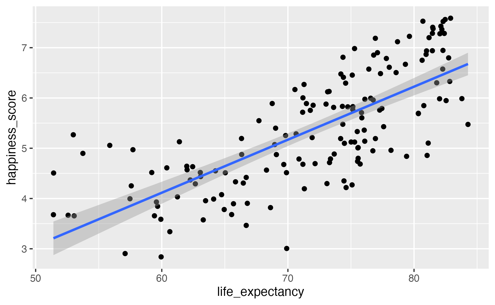
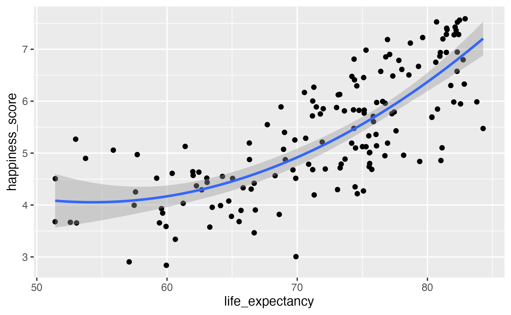

Parameter | Coefficient | SE | 95% CI | t(153) | p
---------------------------------------------------------------------------
(Intercept) | -2.21 | 0.56 | [-3.31, -1.12] | -3.98 | < .001
life expectancy | 0.11 | 7.68e-03 | [ 0.09, 0.12] | 13.73 | < .001Moving from models to meaning
How to interpret statistical models using {marginaleffects} in Python
Andrew Heiss
April 8, 2025
Plan for today
- Sliders, switches, and mixing boards
- Moving from model to meaning
- {marginaleffects} in action
Sliders, switches, and mixing boards

model_slider = smf.ols(
"happiness_score ~ life_expectancy",
data = happiness).fit()
model_slider.summary()model_switch = smf.ols(
"happiness_score ~ latin_america",
data = happiness).fit()
model_switch.summary()Parameter | Coefficient | SE | 95% CI | t(153) | p
-----------------------------------------------------------------------
(Intercept) | 5.24 | 0.10 | [5.05, 5.43] | 54.36 | < .001
latin americaTRUE | 0.90 | 0.26 | [0.40, 1.41] | 3.52 | < .001
model_mixer = smf.ols(
"happiness_score ~ life_expectancy + school_enrollment + C(region)",
data = happiness.to_pandas()).fit()
model_mixer.summary()# A tibble: 9 × 5
term estimate std.error statistic p.value
<chr> <dbl> <dbl> <dbl> <dbl>
1 (Intercept) -2.82 1.35 -2.08 0.0400
2 life_expectancy 0.102 0.0174 5.89 0.0000000587
3 school_enrollment 0.00769 0.00979 0.785 0.435
4 regionEurope & Central Asia 0.0315 0.255 0.123 0.902
5 regionLatin America & Caribbean 0.732 0.294 2.49 0.0146
6 regionMiddle East & North Africa 0.189 0.317 0.597 0.552
7 regionNorth America 1.11 0.581 1.92 0.0582
8 regionSouth Asia -0.249 0.450 -0.553 0.582
9 regionSub-Saharan Africa 0.326 0.407 0.802 0.425 Moving from model to meaning
Stop looking at raw model parameters!
Except in super simple models, dealing with raw coefficients is (1) a hassle and (2) impossible for readers and stakeholders to understand.
Convert model parameters into quantities that make more intuitive sense.
Post-estimation questions
- Quantity: What are you interested in? Predictions? Comparisons of means? Relationships?
- Predictors or Grid: Which predictor values are you interested in? Predictions for rows in the dataset? For hypothetical new rows?
- Aggregation: Do you want to look at unit-level estimates or do you want to collapse estimates into summarized values?
- Uncertainty: How will you quantify uncertainty?
- Test: Which hypothesis tests are relevant?
Post-estimation questions
More simply, which values are you plugging into the model and what are you doing with them after?
Quantity
Predictions (or fitted values, adjusted predictions): What a model spits out after you plug stuff into it. Can be on the original scale of the outcome or transformed (like log odds or odds ratios).
coef std err t P>|t|
Intercept -2.2146 0.556 -3.983 0.000
life_expectancy 0.1055 0.008 13.729 0.000Quantity
\[ \begin{aligned} \hat{\text{happiness}} &= -2.2146 + (0.1055 \times 70) \\ &= 5.17 \end{aligned} \]
Quantity
Comparisons: Some function of two or more predictions—differences in means, risk ratios, effects, lift
Slopes: Partial derivative for a continuous predictor. Like a comparison, but moving it just a tiny bit.
Predictors (grid)
What values are you plugging into the model to generate the quantity of interest?
- Observed: Actual observations (like Albania’s 78.174 years of life expectancy)
- Partially synthetic: Actual observations, but setting some columns to specific values
- Fully synthetic: Made up observations (like making predictions for a typical country with 50, 60, 70, and 80 years of life expectancy, holding everything else constant)
Aggregation
Are you collapsing the quantities of interest, and if so, how?
- Individual estimates
- Average estimates
- Average estimates by group
Enough theory—let’s see some examples!
On average, how does happiness increase in relation to small increases in life expectancy?
- Quantity: Comparison—a one-unit increase in life expectancy (slope)
- Grid: Predictions for each row
- Aggregation: Collapse into overall average
model_mixer = smf.ols(
"happiness_score ~ life_expectancy + school_enrollment + C(region)",
data = happiness.to_pandas()).fit()
avg_comparisons(model_mixer, variables = "life_expectancy") Estimate Std. Error z Pr(>|z|) S 2.5 % 97.5 %
0.102 0.0174 5.89 <0.001 28.0 0.0684 0.137What’s the difference in average life expectancy between North America and South Asia?
- Quantity: Comparison: difference in means
- Grid: Predictions for each row
- Aggregation: Collapse into two region specific averages
Estimate Std. Error z Pr(>|z|) S 2.5 % 97.5 %
-1.36 0.67 -2.03 0.042 4.6 -2.68 -0.049
You can get these same numbers from a regression table!
# A tibble: 9 × 5
term estimate std.error statistic p.value
<chr> <dbl> <dbl> <dbl> <dbl>
1 (Intercept) -2.82 1.35 -2.08 0.0400
2 life_expectancy 0.102 0.0174 5.89 0.0000000587
3 school_enrollment 0.00769 0.00979 0.785 0.435
4 regionEurope & Central Asia 0.0315 0.255 0.123 0.902
5 regionLatin America & Caribbean 0.732 0.294 2.49 0.0146
6 regionMiddle East & North Africa 0.189 0.317 0.597 0.552
7 regionNorth America 1.11 0.581 1.92 0.0582
8 regionSouth Asia -0.249 0.450 -0.553 0.582
9 regionSub-Saharan Africa 0.326 0.407 0.802 0.425 More complex models
Let’s square life expectancy!

model_poly = smf.ols(
"happiness_score ~ life_expectancy + I(life_expectancy**2) + school_enrollment + latin_america",
data = happiness.to_pandas()).fit()
model_poly.summary()# A tibble: 5 × 5
term estimate std.error statistic p.value
<chr> <dbl> <dbl> <dbl> <dbl>
1 (Intercept) 15.9 5.22 3.05 0.00296
2 life_expectancy -0.425 0.150 -2.83 0.00561
3 I(life_expectancy^2) 0.00372 0.00106 3.50 0.000705
4 school_enrollment 0.00535 0.00903 0.592 0.555
5 latin_americaTRUE 0.802 0.197 4.08 0.0000929avg_comparisons(
model_poly,
newdata = datagrid(life_expectancy = [60, 80]),
by = "life_expectancy",
variables="life_expectancy"
)
Term life_expectancy Estimate Std. Error z Pr(>|z|) S 2.5 % 97.5 %
life_expectancy 60 0.0256 0.0242 1.06 0.29 1.8 -0.0218 0.073
life_expectancy 80 0.1746 0.0251 6.95 <0.001 38.0 0.1254 0.224
Type: response
Comparison: mean(+1)
Columns: rowid, term, contrast, life_expectancy, estimate, std.error, statistic, p.value, s.value, conf.low, conf.high, predicted_lo, predicted_hi, predicted
Estimate Std. Error z Pr(>|z|) S 2.5 % 97.5 %
0.132 0.0157 8.4 <0.001 54.3 0.101 0.163
Term: life_expectancy
Type: response
Comparison: mean(+1)
Columns: term, contrast, estimate, std.error, statistic, p.value, s.value, conf.low, conf.high, predicted_lo, predicted_hi, predicted Interaction terms
model_poly_int = smf.ols(
"happiness_score ~ life_expectancy * latin_america + I(life_expectancy**2) * latin_america + school_enrollment",
data=happiness.to_pandas()
).fit()# A tibble: 7 × 5
term estimate std.error statistic p.value
<chr> <dbl> <dbl> <dbl> <dbl>
1 (Intercept) 15.7 5.32 2.96 0.00390
2 life_expectancy -0.420 0.153 -2.74 0.00734
3 latin_americaTRUE 58.5 98.3 0.595 0.553
4 I(life_expectancy^2) 0.00369 0.00109 3.39 0.00102
5 school_enrollment 0.00517 0.00911 0.568 0.571
6 life_expectancy:latin_americaTRUE -1.55 2.64 -0.587 0.558
7 latin_americaTRUE:I(life_expectancy^2) 0.0104 0.0177 0.587 0.558 avg_comparisons(
model_poly_int,
newdata = datagrid(life_expectancy = [60, 80], latin_america = [0, 1]),
by = ["life_expectancy", "latin_america"],
variables = "life_expectancy") Term life_expectancy latin_america Estimate Std. Error
life_expectancy 60 FALSE 0.0265 0.0245
life_expectancy 60 TRUE -0.2667 0.5021
life_expectancy 80 FALSE 0.1739 0.0258
life_expectancy 80 TRUE 0.2957 0.2171What is the predicted level of happiness in a typical country with low and with high life expectancy in Latin America and not in Latin America?
- Quantity: Prediction—fitted values
- Grid: Fully synthetic data (plug in four rows)
- Aggregation: None—report individual values
predictions(
model_poly_int,
newdata = datagrid(life_expectancy = [60, 80], latin_america = [0, 1])
)life_expectancy latin_america Estimate Std. Error
60 FALSE 4.30 0.196
60 TRUE 7.24 3.769
80 FALSE 6.23 0.109
80 TRUE 7.25 0.525Not just for OLS!
- Logistic regression
- Beta regression
- Poisson regression
- Ordered logistic regression
- Multilevel/hierarchical models
- Bayesian models
See complete documentation with a billion examples and tutorials at https://marginaleffects.com/